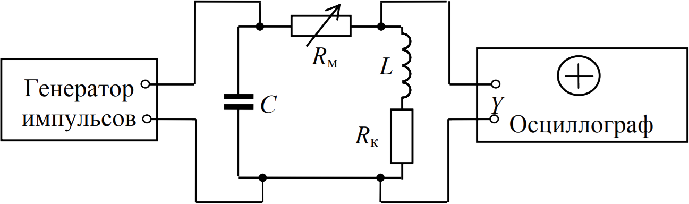

This preloader is too good
This preloader is too good

Схема установки для изучения затухающих электромагнитных колебаний приведена на рисунке:
Колебательный контур установки состоит из конденсатора C, катушки индуктивности L и магазина сопротивлений Rм. Конденсатор заряжается под воздействием периодически повторяющихся прямоугольных импульсов напряжения, которые вырабатываются генератором. В промежутках между соседними импульсами в контуре совершаются электромагнитные колебания. Затухание колебаний определяется в основном потерями энергии в сопротивлении обмотки катушки Rк и магазина сопротивлений Rм. Возбуждаемые в контуре колебания напряжения подаются на вход Y электронного осциллографа. Генератор временнóй развертки осциллографа синхронизируется переменным напряжением, частота которого совпадает с частотой повторения импульсов напряжения, подаваемого на конденсатор. На экране осциллографа воспроизводится зависимость напряжения U на обкладках конденсатора от времени t при затухающих электромагнитных колебаниях в контуре, которые совершаются в промежутках времени между импульсами напряжения, заряжающего конденсатор. Магазин сопротивлений Rм предназначен для изменения активного сопротивления R контура, которое представляет собой сумму сопротивлений обмотки катушки Rк и Rм, выбранного на магазине сопротивлений (R = Rк + Rм).